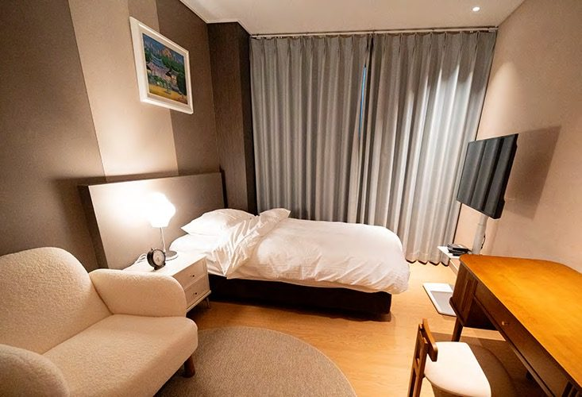
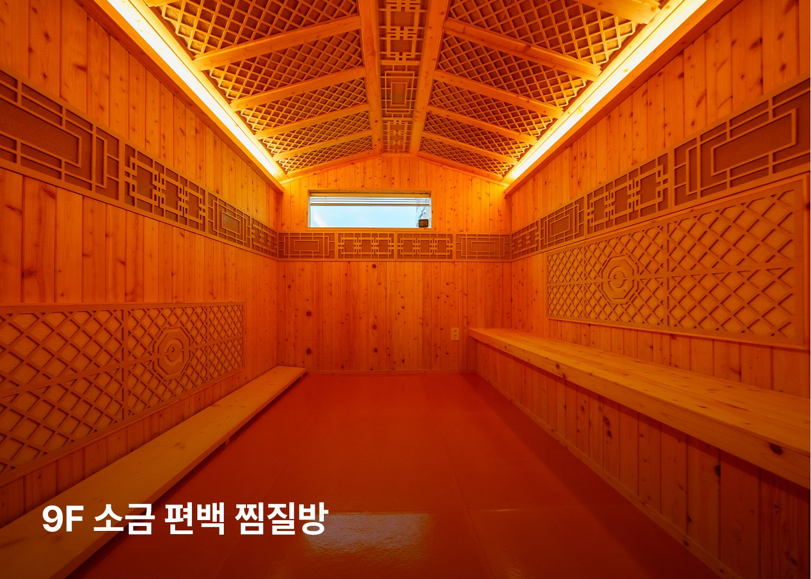
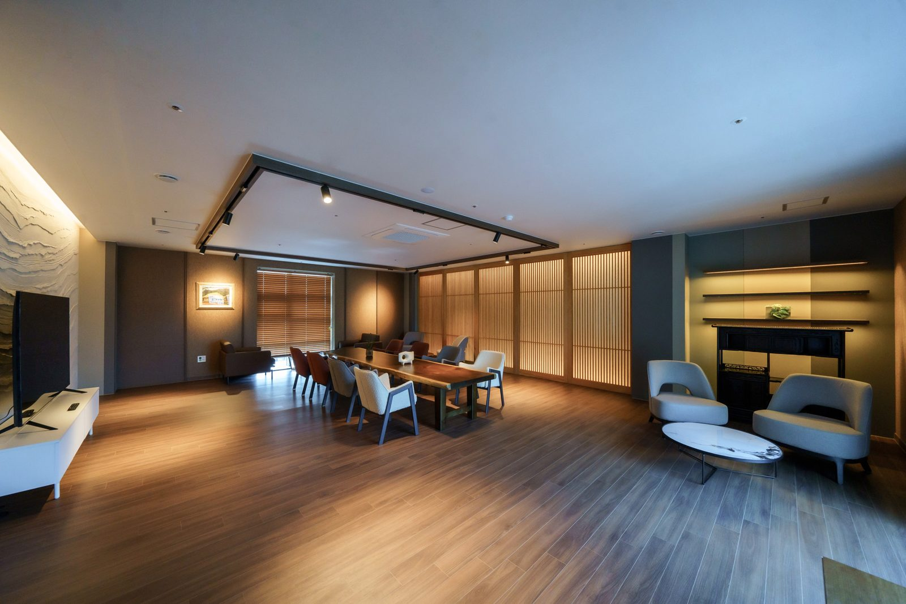

항암 중 요양병원 단기입원은 며칠부터 가능한가요?
하일렌요양병원의 단기입원은 1박 2일부터 치료 일정에 맞춰 이용할 수 있습니다. 입원하지 않아도 외래로 통원하며 고주파온열암치료, 고압산소치료, 도수치료, 림프 관리, 고용량 비타민C, 면역 주사제, 영양공급수액을 받을 수 있습니다. 항암 주기 사이와 치료가 끝난 뒤에도 회복을 이어가는 길입니다.

외래 및 통원 안내 — 입원 · 단기입원 · 외래
하일렌요양병원은 환자 중심으로 설계된 공간을 갖추고 있습니다. 1인 전용면적 약 20평 규모의 단독 건물로, 쾌적한 환경 속에서 치료와 휴식을 함께할 수 있습니다.
- 단기입원
- 1박 2일부터, 주중과 주말 모두 가능
- 외래 회복치료
- 고주파온열암치료 · 고압산소치료 · 도수치료 · 림프 관리 · 고용량 비타민C · 면역 주사제 · 영양공급수액
- 상담
- 원내 상담실 · 카카오톡 채널 · 062-439-1000
단기입원은 1박 2일부터입니다
일상과 회복을 함께 지키는 단기입원입니다. 주중과 주말 모두 1박 2일부터 단기 일정으로 입원할 수 있습니다. 치료 일정에 맞춰 짧은 입원과 퇴원을 되풀이하고, 그 사이는 외래로 이어 갑니다. 일상 및 직장생활과 병행이 어려운 분들을 위한 단기입원 관리가 가능합니다.
- 단기입원(1박 2일부터), 외래, 주사 → 일정과 상황에 따라 선택

단기입원 중에는 고주파온열암치료, 고압산소치료, 면역 주사제, 통증치료, 도수치료, 림프 관리를 받을 수 있습니다. 저녁 캘리그라피, 주말영화, 라인댄스로 한 주의 회복 일정을 만들어 드립니다. 프로그램 요일과 시간은 프로그램 안내에서 확인해 주세요.
주말에 일하시는 분들을 위한 주중 단기입원도 1박 2일부터 준비되어 있습니다.
항암 주기에 맞춰 입원과 퇴원을 반복하는 이용 방식이 있습니다. 흔한 흐름은 항암 주사를 대학병원·암병원·종합병원에서 받고 항암 뒤 힘든 며칠을 입원으로 보낸 뒤 퇴원했다가 다음 항암 때 다시 입원하는 방식입니다. 다음 항암 전날에 맞춰 재입원을 미리 예약해 둘 수도 있습니다.
일상을 지키면서 회복하는 방법은 원내 상담실과 함께 정합니다. 단기입원 예약접수를 받습니다.
입원 서류는 소견서 또는 진료기록지 중 하나, 신분증, 피검사 결과지입니다. 소견서 작성이 어려우면 현재까지의 진료 기록이 담긴 진료기록지만 발급받아도 됩니다. 병실과 식사 안내는 입원 안내에 있습니다.
외래 회복치료 7종
입원이 끝나도 회복은 끝나지 않습니다. 외래로 이어지는 회복 흐름을 하일렌요양병원이 함께 관리합니다. 입원하지 않아도 외래로 통원하며 아래 치료를 받을 수 있습니다.
- 고주파온열암치료
- 고압산소치료
- 도수치료
- 림프 관리
- 고용량 비타민C
- 면역 주사제
- 영양공급수액
도수·림프·통증·고주파 치료는 입원 환자분과 동일한 시설에서 받으실 수 있습니다. 어떤 회복치료를 받을지는 주치의가 진료한 뒤 처방하므로, 같은 날 오셔도 환자마다 받는 치료가 다를 수 있습니다.
이런 분께 외래 통원을 권합니다
퇴원 이후가 진짜 시작입니다. 수술과 항암 뒤에도 몸은 회복 중이고, 재발과 전이에 대한 불안은 자연스러운 감정입니다. 정기 통원으로 몸 상태를 점검합니다. 다음 세 경우에 외래 통원을 권합니다.
- 림프부종이나 통증이 남아 있는 분
- 입원 중 받던 관리를 이어가고 싶은 분
- 다음 항암까지의 공백 기간을 관리하고 싶은 분
외래센터 블룸 공간은 치료센터 안내에서 보실 수 있습니다.


외래 일정은 어떻게 짜나요
외래 회복치료 날짜는 대학병원·암병원의 항암·방사선·외래 일정을 먼저 적어 두고, 그 일정이 없는 날 가운데 원내 상담실과 함께 요일을 정합니다.
외래와 단기입원도 치료 일정 담당자와는 처음 한 번 2층 상담실에서 만납니다. 그 뒤의 일정 조정과 치료 계획은 카카오톡 채널로 주고받습니다.
입원 중 대학병원·암병원 외래 진료
입원 중에도 대학병원·암병원 외래는 그대로 다닙니다. 입원 중 다른 병원 외래 진료에 필요한 진료의뢰서는 원내 주치의가 작성합니다. 외래 일정 조정은 원내 상담실에서 안내합니다.
야간·응급 대응은 입원 안내에서 안내합니다.
퇴원 뒤에도 이어집니다
하일렌요양병원의 회복 설계는 퇴원으로 끝나지 않습니다. 퇴원하실 때 앞으로의 계획을 원내 상담실과 함께 정리하고, 집으로 돌아가신 뒤에는 카카오톡 채널로 '퇴원 후 면역관리 가이드'를 보내드립니다. 일상에서 면역을 지키는 습관과 컨디션이 흔들릴 때 확인할 점을 담았습니다. 몸이 힘든 날에는 외래나 1박 2일부터 가능한 단기입원으로 언제든 다시 관리받으실 수 있습니다. 입원부터 퇴원 후 일상까지, 회복의 흐름을 하일렌요양병원이 계속 함께 살핍니다.
퇴원 전에는 퇴원 상담을 합니다. 나가시는 이유, 외래로 이어갈 회복치료, 집에서 지킬 최소선을 함께 정합니다. 외래를 다닐 요일과 다음 입원 예약 날짜도 이때 원내 상담실과 함께 정합니다. 먼 지역에서 오시는 분은 외래를 자주 오가기보다 힘든 주간만 단기입원하고 외래 요일을 줄여 잡도록 원내 상담실이 일정을 맞춥니다.
한 달에 한 번이라도 괜찮습니다. 진료만 보러 오셔도 됩니다.

자주 묻는 질문
단기입원은 며칠부터 가능한가요?
하일렌요양병원의 단기입원은 1박 2일부터 치료 일정에 맞춰 이용할 수 있습니다. 주중과 주말 모두 가능하며, 일상 및 직장생활과 병행이 어려운 분들을 위한 단기입원 관리가 가능합니다.
암 수술 후 3박 4일만 입원할 수 있나요?
네, 단기입원은 1박 2일부터 치료 일정에 맞춰 이용할 수 있습니다. 수술 직후의 며칠이나 항암 다음 주의 며칠처럼 힘든 구간만 짧게 입원하는 방식입니다. 입원 기간이 모든 분께 같게 정해져 있지는 않습니다. 다음 치료 일정과 지금의 몸 상태·식사, 집에서 지내실 여건을 주치의가 진료에서 함께 보고 환자분과 상의해 정합니다. 정한 기간도 지내시면서 치료 일정이나 몸 상태에 따라 다시 맞출 수 있습니다. 일정은 원내 상담실과 함께 정합니다.
직장 복귀 전에 1~2주만 입원할 수 있나요?
네, 복귀를 앞두고 며칠 입원해 몸을 추스르실 수 있습니다. 복귀 전에는 체력과 식사, 남은 치료 일정을 먼저 살피고, 맞는 입원 방식을 원내 상담실과 함께 정합니다. 입원할 수 있는 기간이 정해져 있으면 상담 때 말씀해 주세요. 기간은 그 일정과 몸 상태를 보고 주치의가 진료에서 환자와 상의해 정합니다. 직장 복귀 전에는 세 가지 방법, 곧 복귀 직전 며칠만 입원하기, 복귀한 뒤 외래로 병행하기, 항암 주간에만 입원하기 가운데 치료 일정과 근무 형태에 맞춰 원내 상담실과 정합니다. 외래 요일과 시간은 근무 시간을 피해 잡을 수 있습니다. 복귀해도 되는지와 그 시기는 현재 진료중인 대학병원의 담당의와 정합니다.
항암 후 집에서 쉬는 것과 요양병원 중 무엇이 낫나요?
입원과 외래는 치료 일정과 현재 몸 상태를 함께 보고 정합니다. 입원하지 않아도 외래로 통원하며 고주파온열암치료, 고압산소치료, 도수치료, 림프 관리, 고용량 비타민C, 면역 주사제, 영양공급수액을 받을 수 있습니다. 어느 쪽이 맞는지는 원내 상담실과 함께 정합니다.
입원하지 않고 외래로만 다녀도 되나요?
입원하지 않아도 외래로 통원하며 고주파온열암치료, 고압산소치료, 도수치료, 림프 관리, 고용량 비타민C, 면역 주사제, 영양공급수액을 받을 수 있습니다. 진료만 보러 오셔도 됩니다.
입원 중에도 대학병원·암병원 외래를 계속 다닐 수 있나요?
네, 입원 중에도 대학병원·암병원 외래는 그대로 다니시면 됩니다. 그날 필요한 진료의뢰서는 원내 주치의가 작성합니다. 외래 날에 다녀와 입원을 이어 갈지, 외래 날에 맞춰 퇴원할지는 치료 일정에 맞춰 원내 상담실과 함께 정합니다.
입원 예약 후 치료 일정이 바뀌면 어떻게 하나요?
입원 예약 뒤에 대학병원·암병원 일정이 바뀌면 새 날짜를 아시는 대로 원내 상담실로 알려 주십시오. 예약을 취소할 필요 없이 입원 날짜만 다시 정하면 되고, 기다리는 동안 외래로 먼저 다니는 방법도 있습니다.
퇴원 후 재입원은 어떻게 하나요?
다시 입원하시는 날에도 그 사이 새로 받으신 약은 봉투째 가져오시고, 새 검사 결과지가 있으면 함께 챙겨 오시면 됩니다. 병동 간호사가 새로 적어 두고, 주치의가 원내 처방과 나란히 확인합니다.
단기입원 때 어떤 서류를 준비하나요?
소견서 또는 진료기록지 중 하나, 신분증, 피검사 결과지를 준비합니다. 소견서 작성이 어려우면 현재까지의 진료 기록이 담긴 진료기록지만 발급받아도 됩니다.
외래·단기입원 상담은 원내 상담실에서 안내합니다. 궁금한 점 있으시면 언제든 물어보세요.
제공 하일렌요양병원 · 갱신 2026-10-21